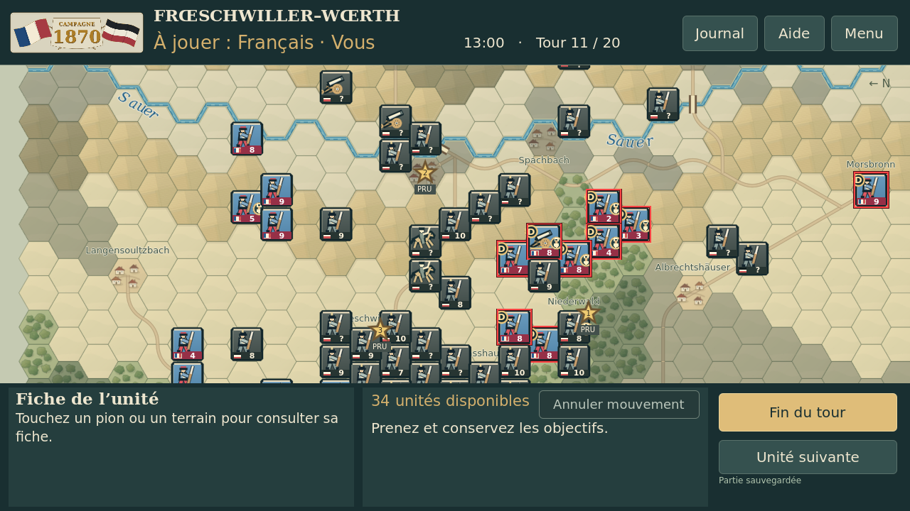
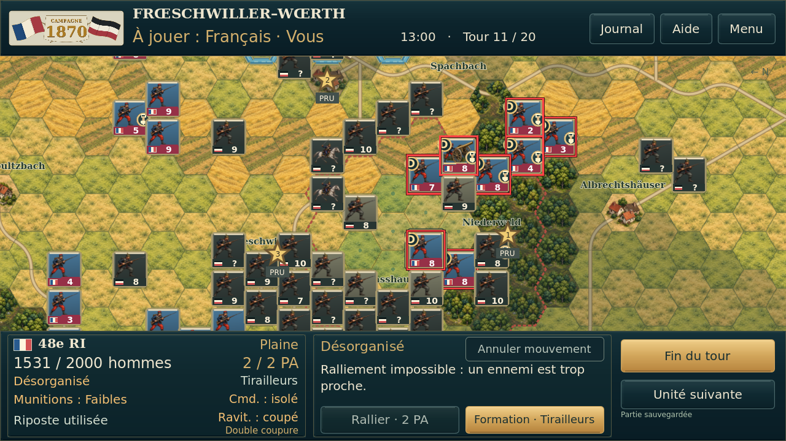
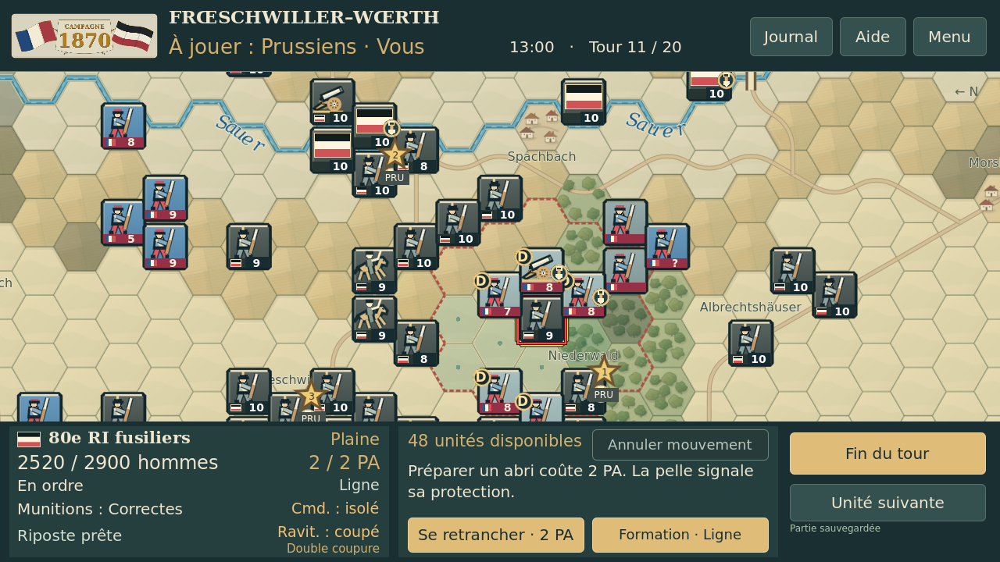
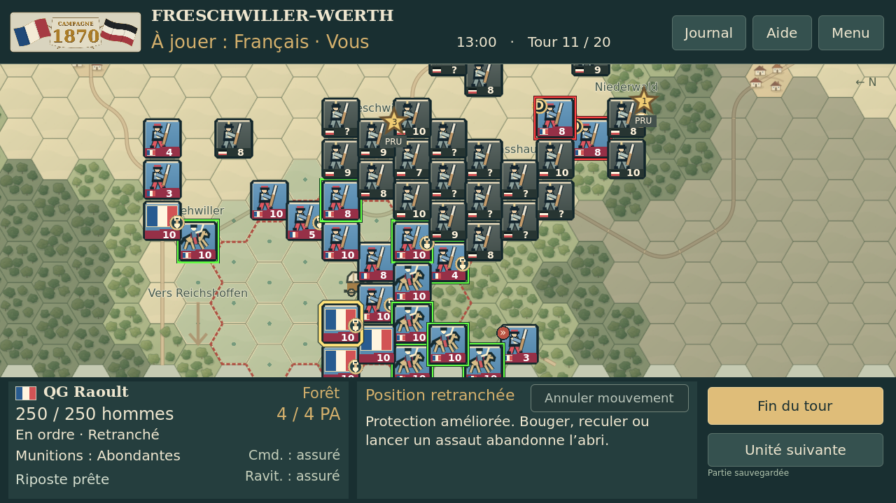
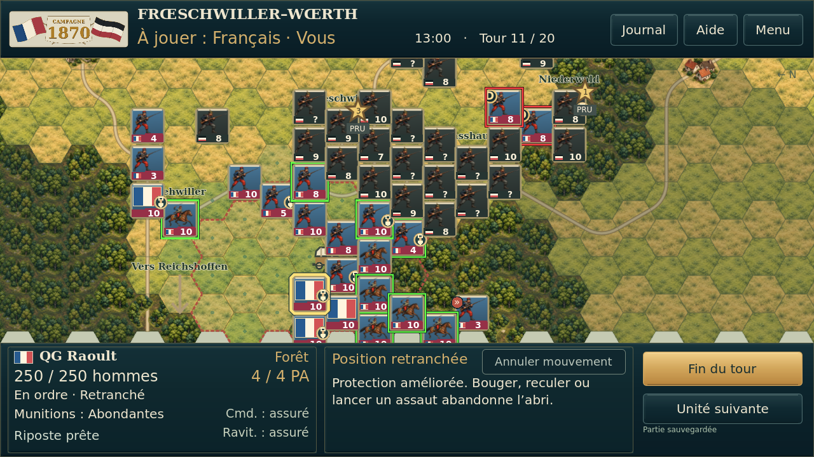
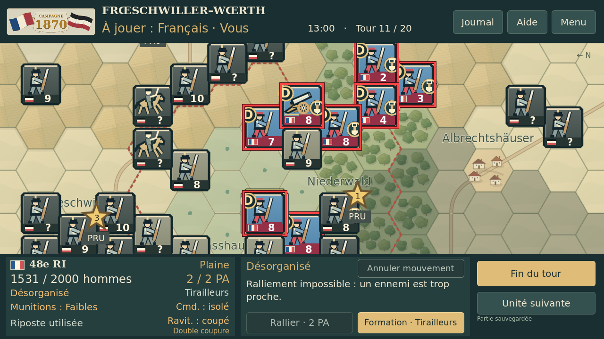
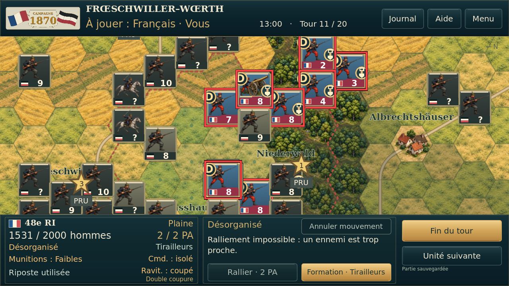

Carte, Sauer et localités



Captures réelles du jeu sous Godot 4.5.1, Linux/OpenGL logiciel. Même état T11 de test et même caméra dans chaque paire, pas une simulation chronologique ni un essai Android.








